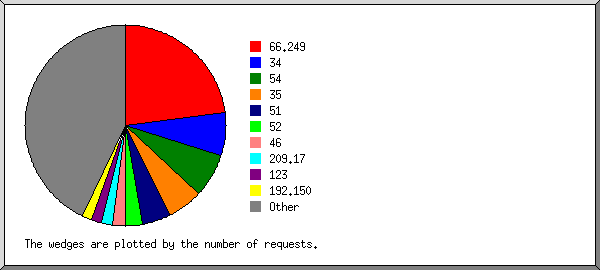
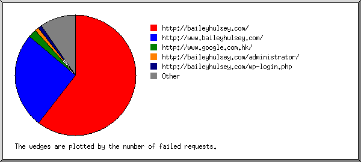
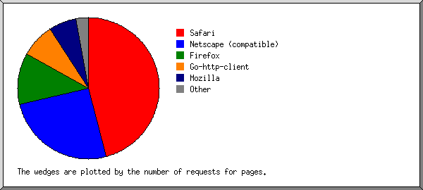
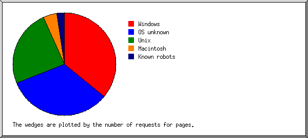
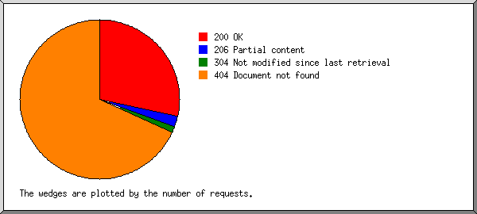
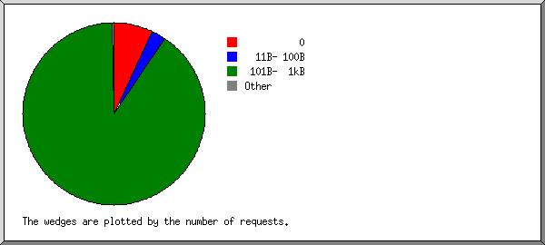
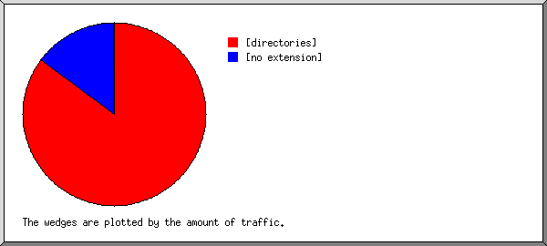
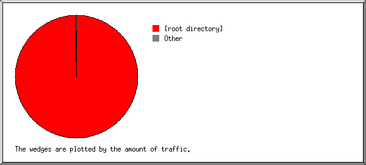
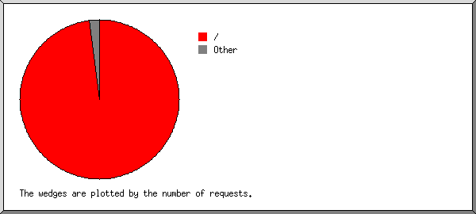

Web Server Statistics for baileyhulsey.com
Web Server Statistics for baileyhulsey.com
Program started on Fri, May 31 2019 at 7:15 AM.
Analyzed requests from Thu, May 23 2019 at 12:35 PM to Fri, May 31 2019 at 6:13 AM (7.73 days).
Web Server Statistics for baileyhulsey.comProgram started on Fri, May 31 2019 at 7:15 AM.
Analyzed requests from Thu, May 23 2019 at 12:35 PM to Fri, May 31 2019 at 6:13 AM (7.73 days).
(Go To: Top | General Summary | Monthly Report | Daily Summary | Hourly Summary | Domain Report | Organization Report | Failed Referrer Report | Referring Site Report | Browser Report | Browser Summary | Operating System Report | Status Code Report | File Size Report | File Type Report | Directory Report | Request Report)
Figures in parentheses refer to the 7-day period ending May 31 2019 at 7:15 AM.
Successful requests: 103 (87)
Average successful requests per day: 13 (12)
Successful requests for pages: 98 (86)
Average successful requests for pages per day: 12 (12)
Failed requests: 220 (34)
Distinct files requested: 8 (1)
Distinct hosts served: 56 (12)
Data transferred: 126.99 kilobytes (59.75 kilobytes)
Average data transferred per day: 16.42 kilobytes (8.54 kilobytes)
(Go To: Top | General Summary | Monthly Report | Daily Summary | Hourly Summary | Domain Report | Organization Report | Failed Referrer Report | Referring Site Report | Browser Report | Browser Summary | Operating System Report | Status Code Report | File Size Report | File Type Report | Directory Report | Request Report)
Each unit ( ) represents 3 requests for pages or part thereof.
) represents 3 requests for pages or part thereof.
| month | #reqs | #pages | |
|---|---|---|---|
| May 2019 | 103 | 98 |  |
Busiest month: May 2019 (98 requests for pages).
(Go To: Top | General Summary | Monthly Report | Daily Summary | Hourly Summary | Domain Report | Organization Report | Failed Referrer Report | Referring Site Report | Browser Report | Browser Summary | Operating System Report | Status Code Report | File Size Report | File Type Report | Directory Report | Request Report)
Each unit () represents 1 request for a page.
| day | #reqs | #pages | |
|---|---|---|---|
| Sun | 14 | 13 |   |
| Mon | 13 | 13 | |
| Tue | 11 | 11 |  |
| Wed | 20 | 20 |  |
| Thu | 29 | 25 | |
| Fri | 10 | 10 | |
| Sat | 6 | 6 | |
(Go To: Top | General Summary | Monthly Report | Daily Summary | Hourly Summary | Domain Report | Organization Report | Failed Referrer Report | Referring Site Report | Browser Report | Browser Summary | Operating System Report | Status Code Report | File Size Report | File Type Report | Directory Report | Request Report)
Each unit () represents 1 request for a page.
| hour | #reqs | #pages | |
|---|---|---|---|
| 0 | 2 | 2 | |
| 1 | 1 | 1 | |
| 2 | 2 | 2 | |
| 3 | 2 | 2 | |
| 4 | 5 | 5 | |
| 5 | 5 | 5 | |
| 6 | 2 | 2 | |
| 7 | 3 | 3 | |
| 8 | 10 | 10 | |
| 9 | 4 | 4 | |
| 10 | 2 | 2 | |
| 11 | 11 | 11 | |
| 12 | 9 | 6 | |
| 13 | 11 | 11 | |
| 14 | 2 | 2 | |
| 15 | 7 | 7 | |
| 16 | 2 | 2 | |
| 17 | 8 | 6 | |
| 18 | 6 | 6 | |
| 19 | 3 | 3 | |
| 20 | 0 | 0 | |
| 21 | 1 | 1 | |
| 22 | 5 | 5 | |
| 23 | 0 | 0 |
(Go To: Top | General Summary | Monthly Report | Daily Summary | Hourly Summary | Domain Report | Organization Report | Failed Referrer Report | Referring Site Report | Browser Report | Browser Summary | Operating System Report | Status Code Report | File Size Report | File Type Report | Directory Report | Request Report)
Listing domains, sorted by the amount of traffic.
| #reqs | %bytes | domain |
|---|---|---|
| 103 | 100% | [unresolved numerical addresses] |
(Go To: Top | General Summary | Monthly Report | Daily Summary | Hourly Summary | Domain Report | Organization Report | Failed Referrer Report | Referring Site Report | Browser Report | Browser Summary | Operating System Report | Status Code Report | File Size Report | File Type Report | Directory Report | Request Report)

Listing the top 20 organizations by the number of requests, sorted by the number of requests.
| #reqs | %bytes | organization |
|---|---|---|
| 16 | 3.85% | 46 |
| 15 | 54.82% | 192.150 |
| 11 | 2.73% | 66.249 |
| 8 | 1.85% | 178.154 |
| 7 | 26.63% | 98 |
| 6 | 1.41% | 34 |
| 4 | 1.12% | 54 |
| 4 | 1.94% | 118 |
| 3 | 0.65% | 51 |
| 3 | 0.63% | 198.186 |
| 2 | 0.56% | 207.46 |
| 2 | 0.56% | 173.193 |
| 2 | 0.13% | 66.133 |
| 2 | 109 | |
| 2 | 0.15% | 144.168 |
| 2 | 0.97% | 67.225 |
| 1 | 0.07% | 144.217 |
| 1 | 0.07% | 52 |
| 1 | 0.07% | 18 |
| 1 | 0.07% | 178.62 |
| 10 | 1.71% | [not listed: 10 organizations] |
(Go To: Top | General Summary | Monthly Report | Daily Summary | Hourly Summary | Domain Report | Organization Report | Failed Referrer Report | Referring Site Report | Browser Report | Browser Summary | Operating System Report | Status Code Report | File Size Report | File Type Report | Directory Report | Request Report)

Listing referring URLs, sorted by the number of failed requests.
| #reqs | URL |
|---|---|
| 10 | http://baileyhulsey.com/ |
| 2 | http://www.baileyhulsey.com/ |
| 1 | http://www.google.com.hk/ |
(Go To: Top | General Summary | Monthly Report | Daily Summary | Hourly Summary | Domain Report | Organization Report | Failed Referrer Report | Referring Site Report | Browser Report | Browser Summary | Operating System Report | Status Code Report | File Size Report | File Type Report | Directory Report | Request Report)
Listing referring sites, sorted by the number of requests.
| #reqs | site |
|---|---|
| 9 | https://uptime.com/ |
(Go To: Top | General Summary | Monthly Report | Daily Summary | Hourly Summary | Domain Report | Organization Report | Failed Referrer Report | Referring Site Report | Browser Report | Browser Summary | Operating System Report | Status Code Report | File Size Report | File Type Report | Directory Report | Request Report)

Listing browsers with at least 1 request for a page, sorted by the number of requests for pages.
| #reqs | #pages | browser |
|---|---|---|
| 16 | 14 | Mozilla/5.0 (Windows NT 10.0; Win64; x64) AppleWebKit/537.36 (KHTML, like Gecko) Chrome/74.0.3729.169 Safari/537.36 |
| 9 | 9 | Mozilla/5.0 (Windows NT 6.1; Win64; x64; rv:64.0) Gecko/20100101 Firefox/64.0 |
| 9 | 9 | Mozilla/5.0 (compatible; Uptimebot/1.0; +http://www.uptime.com/uptimebot) |
| 8 | 8 | Mozilla/5.0 (compatible; YandexBot/3.0; +http://yandex.com/bots) |
| 7 | 7 | Mozilla/5.0 (Linux; Android 6.0.1; Nexus 5X Build/MMB29P) AppleWebKit/537.36 (KHTML, like Gecko) Chrome/41.0.2272.96 Mobile Safari/537.36 (compatible; Googlebot/2.1; +http://www.google.com/bot.html) |
| 6 | 6 | Mozilla/5.0 (Windows NT 10.0; Win64; x64)AppleWebKit/537.36 (KHTML, like Gecko) Chrome/66.0.3359.181 Safari/537.36 |
| 6 | 5 | Mozilla/5.0 (Macintosh; Intel Mac OS X 10_14_5) AppleWebKit/537.36 (KHTML, like Gecko) Chrome/74.0.3729.169 Safari/537.36 |
| 4 | 4 | Mozilla/5.0 (compatible; Googlebot/2.1; +http://www.google.com/bot.html) |
| 4 | 4 | Mozilla/5.0 (Macintosh; Intel Mac OS X 10_9_3) AppleWebKit/537.36 (KHTML, like Gecko) Chrome/35.0.1916.47 Safari/537.36 |
| 3 | 3 | Go-http-client/1.1 |
| 3 | 3 | Mozilla/5.0 (compatible; bingbot/2.0; +http://www.bing.com/bingbot.htm) |
| 3 | 3 | Mozilla/5.0 (X11; Linux x86_64) AppleWebKit/537.36 (KHTML, like Gecko) Chrome/67.0.3396.87 Safari/537.36 OPR/54.0.2952.60 |
| 2 | 2 | Mozilla/5.0 (Windows NT 6.1; WOW64) AppleWebKit/537.36 (KHTML, like Gecko) Chrome/34.0.1847.131 Safari/537.36 |
| 2 | 2 | Mozilla/5.0 (Windows NT 6.1; WOW64) AppleWebKit/537.36 (KHTML, like Gecko) Chrome/36.0.1985.143 Safari/537.36 |
| 2 | 2 | Mozilla/5.0 (X11; Ubuntu; Linux x86_64; rv:58.0) Gecko/20100101 Firefox/58.0 |
| 2 | 2 | Mozilla/5.0 (Macintosh; Intel Mac OS X 10.10; rv:65.0) Gecko/20100101 Firefox/65.0 |
| 2 | 2 | Mozilla/5.0 (compatible; AhrefsBot/6.1; +http://ahrefs.com/robot/) |
| 2 | 2 | Mozilla/5.0 (X11; U; Linux i686; en-US; rv:1.4) Gecko/20030624 |
| 1 | 1 | Mozilla/5.0 (Macintosh; Intel Mac OS X 10_13_5) AppleWebKit/537.36 (KHTML, like Gecko) Chrome/67.0.3396.99 Safari/537.36 |
| 1 | 1 | Mozilla/5.0 (compatible; ips-agent) |
| 1 | 1 | Mozilla/5.0 (Macintosh; Intel Mac OS X 10_12_6) AppleWebKit/537.36 (KHTML, like Gecko) Chrome/61.0.3163.100 Safari/537.36 |
| 1 | 1 | Mozilla/5.0 (X11; Linux x86_64) AppleWebKit/537.36 (KHTML, like Gecko) Chrome/41.0.2227.0 Safari/537.36 |
| 1 | 1 | Mozilla/5.0 (Windows NT 6.0) AppleWebKit/537.36 (KHTML, like Gecko) Chrome/34.0.1847.116 Safari/537.36 |
| 1 | 1 | Mozilla/5.0 (Windows NT 10.0; WOW64; Trident/7.0; rv:11.0) like Gecko |
| 2 | 0 | [not listed: 1 browser] |
(Go To: Top | General Summary | Monthly Report | Daily Summary | Hourly Summary | Domain Report | Organization Report | Failed Referrer Report | Referring Site Report | Browser Report | Browser Summary | Operating System Report | Status Code Report | File Size Report | File Type Report | Directory Report | Request Report)

Listing browsers with at least 1 request for a page, sorted by the number of requests for pages.
| # | #reqs | #pages | browser |
|---|---|---|---|
| 1 | 50 | 47 | Safari |
| 50 | 47 | Safari/537 | |
| 2 | 29 | 27 | Netscape (compatible) |
| 3 | 13 | 13 | Firefox |
| 9 | 9 | Firefox/64 | |
| 2 | 2 | Firefox/65 | |
| 2 | 2 | Firefox/58 | |
| 4 | 3 | 3 | Mozilla |
| 2 | 2 | Mozilla/1 | |
| 5 | 3 | 3 | Go-http-client |
| 3 | 3 | Go-http-client/1 |
(Go To: Top | General Summary | Monthly Report | Daily Summary | Hourly Summary | Domain Report | Organization Report | Failed Referrer Report | Referring Site Report | Browser Report | Browser Summary | Operating System Report | Status Code Report | File Size Report | File Type Report | Directory Report | Request Report)

Listing operating systems, sorted by the number of requests for pages.
| # | #reqs | #pages | OS |
|---|---|---|---|
| 1 | 37 | 35 | Windows |
| 23 | 21 | Windows NT | |
| 14 | 14 | Unknown Windows | |
| 2 | 30 | 28 | OS unknown |
| 3 | 15 | 15 | Unix |
| 15 | 15 | Linux | |
| 4 | 14 | 13 | Macintosh |
| 5 | 2 | 2 | Known robots |
(Go To: Top | General Summary | Monthly Report | Daily Summary | Hourly Summary | Domain Report | Organization Report | Failed Referrer Report | Referring Site Report | Browser Report | Browser Summary | Operating System Report | Status Code Report | File Size Report | File Type Report | Directory Report | Request Report)

Listing status codes, sorted numerically.
| #reqs | status code |
|---|---|
| 83 | 200 OK |
| 11 | 206 Partial content |
| 9 | 304 Not modified since last retrieval |
| 220 | 404 Document not found |
(Go To: Top | General Summary | Monthly Report | Daily Summary | Hourly Summary | Domain Report | Organization Report | Failed Referrer Report | Referring Site Report | Browser Report | Browser Summary | Operating System Report | Status Code Report | File Size Report | File Type Report | Directory Report | Request Report)

| size | #reqs | %bytes |
|---|---|---|
| 0 | 17 | |
| 1B- 10B | 0 | |
| 11B- 100B | 36 | 2.67% |
| 101B- 1kB | 47 | 19.11% |
| 1kB- 10kB | 0 | |
| 10kB-100kB | 3 | 78.22% |
(Go To: Top | General Summary | Monthly Report | Daily Summary | Hourly Summary | Domain Report | Organization Report | Failed Referrer Report | Referring Site Report | Browser Report | Browser Summary | Operating System Report | Status Code Report | File Size Report | File Type Report | Directory Report | Request Report)

Listing extensions with at least 0.1% of the traffic, sorted by the amount of traffic.
| #reqs | %bytes | extension |
|---|---|---|
| 5 | 78.35% | [no extension] |
| 98 | 21.65% | [directories] |
(Go To: Top | General Summary | Monthly Report | Daily Summary | Hourly Summary | Domain Report | Organization Report | Failed Referrer Report | Referring Site Report | Browser Report | Browser Summary | Operating System Report | Status Code Report | File Size Report | File Type Report | Directory Report | Request Report)

Listing directories with at least 0.01% of the traffic, sorted by the amount of traffic.
| #reqs | %bytes | directory |
|---|---|---|
| 101 | 99.87% | [root directory] |
| 2 | 0.13% | /.well-known/ |
(Go To: Top | General Summary | Monthly Report | Daily Summary | Hourly Summary | Domain Report | Organization Report | Failed Referrer Report | Referring Site Report | Browser Report | Browser Summary | Operating System Report | Status Code Report | File Size Report | File Type Report | Directory Report | Request Report)

Listing files with at least 20 requests, sorted by the number of requests.
| #reqs | %bytes | last time | file |
|---|---|---|---|
| 98 | 21.65% | May/31/19 6:12 AM | / |
| 5 | 78.35% | May/26/19 12:41 PM | [not listed: 3 files] |